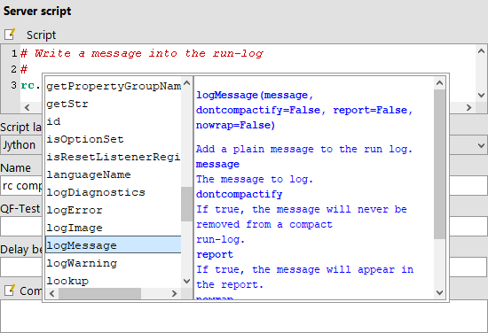
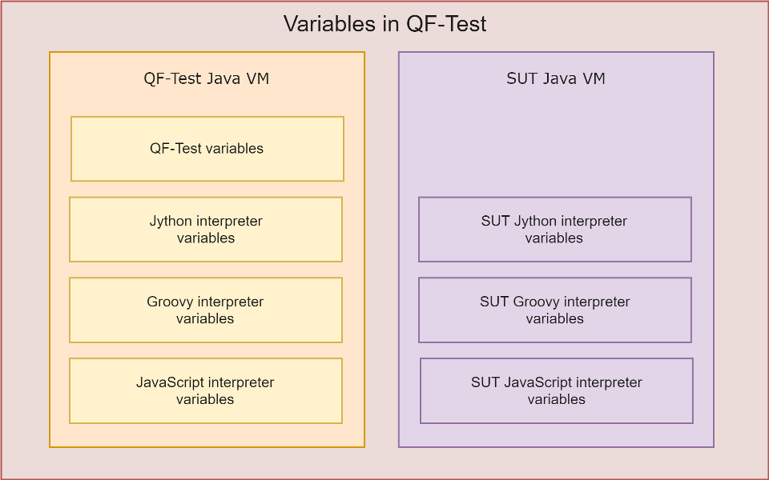

| Version 6.0.3 |
 The video
'Scripting in QF-Test (Basics)'
explains the basic concepts about scripting.
The video
'Scripting in QF-Test (Basics)'
explains the basic concepts about scripting.
If you want to know more about scripting have a look at the video 'Scripting in QF-Test (Advanced) explains the basic concepts about scripting.
One of QF-Test's benefits is that complex tests can be created without writing a single line of code. However, there are limits to what can be achieved with a GUI alone. When testing a program which writes to a database, for example, one might want to verify that the actual values written to the database are correct; or one might want to read values from a database or a file and use these to drive a test. All this and more is possible with the help of powerful scripting languages like Jython, Groovy or JavaScript.
4.2+ While Jython is supported since the beginning of QF-Test, Groovy has found its way into QF-Test a bit later (QF-Test version 3). This language might be more convenient than Jython for those who are familiar with Java. Version 4.2 enabled JavaScript which might be more suitable for web developers. It's mainly a matter of individual preference whether to utilize Jython, Groovy or JavaScript scripting inside QF-Test.
In this chapter the basics of the scripting features available in all supported languages are explained. Most of the examples can be applied exactly or with few changes in other script languages. Methods calls which vary in syntax are exemplified in the affected languages. Particularities of the script languages are described in the sections Fundamentals of the Jython integration, Scripting with Groovy and Scripting with JavaScript.
3.0+ The scripting language to use for a given 'Server script' or 'SUT script' node is determined by its 'Script language' attribute, so you can mix all three languages within a test-suite. The default language to use for newly created script nodes can be set via the option Default script language for script nodes.
The approach to scripting in QF-Test is inverse from that of other GUI test tools. Instead of driving the whole test from a script, QF-Test embeds scripts into the test-suite. This is achieved with the two nodes 'Server script' and 'SUT script'.
Both nodes have a 'Script' attribute for the actual code.
|
|  | ||
|
| Figure 11.1: Detail view of a 'Server script' with help window
for rc methods
| ||
3.0+ The internal script editor has some useful features to ease the typing of code. Reserved keywords, built-in functions, standard types, literals and comments are highlighted. Indentation is handled automatically inside of code blocks. With [TAB] and [Shift-TAB] respectively several selected lines can be indented manually.
However, the probably most useful feature - at least for the QF-Test newbie - might be the
input assistance for many built-in methods. Type, for example, rc. and
maybe some initial letters of a method name. Then press [Ctrl-Space] to open a pop-up window displaying the appropriate methods and descriptions
of QF-Test's run-context (cf. chapter 46). Select one of the
methods and confirm with [Return] to insert it into the script
code. To get a list of all objects equipped with help, just press [Ctrl-Space] with the mouse cursor positioned after white space.
'Server scripts' are useful for tasks like calculating the values of variables or reading and parsing data from a file and using it to drive a test. 'SUT scripts' on the other hand give full access to the components of the SUT and to every Java API that the SUT exposes. An 'SUT script' might be used to retrieve or check values in the SUT to which QF-Test doesn't have access. The 'SUT script' node has a 'Client' attribute which requires the name of the SUT client to run in.
'Server scripts' are run in script interpreters for the different script languages embedded in QF-Test itself, while 'SUT scripts' are run in a script interpreter embedded in the SUT. These interpreters are independent of each other and do not share any state. However, QF-Test uses the RMI connection between itself and the SUT for seamless integration of 'SUT scripts' into the execution of a test.
Through the menu items »Extras«-»Jython terminal...« or »Extras«-»Groovy terminal...« etc. you can open a window with an interactive command prompt for the language interpreter embedded in QF-Test. You can use this terminal to experiment with Jython scripts, get a feeling for the language, but also to try out some sophisticated stuff like setting up database connections. The keystrokes [Ctrl-Up] and [Ctrl-Down] let you cycle through previous input and you can also edit any other line or mark a region in the terminal and simply press [Return] to send it to the interpreter. In that case QF-Test will filter the '>>>' and '...' prompts from previous interpreter output.
Similar terminals are available for each SUT client. The respective menu items are located below the »Clients« menu.
Note When working in a SUT script terminal, there's one thing you need
to be aware of: The commands issued to the interpreter are not executed on the event
dispatch thread, contrary to commands executed via 'SUT script'
nodes. This may not mean anything to you and most of the time it doesn't cause
any problems, but it may deadlock your application if you access any Swing or SWT
components or invoke their methods. To avoid that, QF-Test provides the global method
runAWT (and runSWT respectively) that executes arbitrary code
on the event dispatch thread. For example, to get the number of visible nodes in a
JTree component named tree, use
runAWT("tree.getRowCount()") (or runAWT { tree.getRowCount() }
in Groovy) to be on the safe side.
rc
When executing 'Server scripts' and 'SUT scripts', QF-Test provides a special
environment in which a variable named rc is bound. This variable
represents the run-context which encapsulates the current state of the execution
of the test. It provides an interface (fully documented in section 46.5)
for accessing QF-Test variables, for calling QF-Test procedures and can be used to add
messages to the run-log. To 'SUT scripts' it also provides access to the actual
Java components of the SUT's GUI.
For those cases where no run-context is available, i.e. Resolvers, TestRunListeners, code
executing in a background thread etc. QF-Test also provides a module called qf
with useful generic methods for logging and other things. Please see section 46.6 for details.
One thing the run-context can be used for is to add arbitrary messages to the run-log that QF-Test generates for each test-run. These messages may also be flagged as warnings or errors.
|
|
|
|||
|
| Example 11.1: Logging messages from scripts | |||
When working with compact run-logs (see the option
Create compact run-log), nodes which most likely will not be needed
for error analysis may be deleted from the run-log to preserve memory. This
does not apply to error messages (rc.logError). They are kept, along
with about 100 nodes preceding the error. Warnings (rc.logWarning) are also kept, however, without
preceding nodes. Normal messages (rc.logMessage) may be subject to deletion. If you really
need to make sure that a message will definitely be kept in the run-log you can enforce
this by specifying the optional second parameter dontcompactify, e.g.
|
|
|
|||
|
| Example 11.2: Logging messages that will not get removed in compact run-logs | |||
Most of the time logging messages is tied to evaluating some
condition. In that case, it is often desirable to get a result in
the HTML or XML report equivalent to that of a 'Check' node. The
methods rc.check and rc.checkEqual will do just that:
|
|
|
|||
|
| Example 11.3: Performing checks | |||
The optional last argument changes the error level in case of
failure. Possible values are rc.EXCEPTION, rc.ERROR, rc.OK or rc.WARNING.
QF-Test has different kinds of variables. On the one hand you find variables belonging to the QF-Test environment and on the other variables of the script languages. Variables of the script languages are separated in server and SUT side variables of the specific script interpreter. The following graphic clarifies theses differences:
|
|  | ||
|
| Figure 11.2: Overview of the types of variables in QF-Test | ||
To share the different kinds of variables between QF-Test and the script interpreters
provides the rc object which has several methods for the purpose.
The methods are explained in the next section.
Using QF-Test variables in scripts is not difficult. You can use the run-context's
lookup method (see section 46.5 for API reference)
whenever you want to access a QF-Test value as a string.
|
|
|
|||
|
| Example 11.4: Using rc.lookup to access string
variables | |||
To make the results of a script available during further
test execution, values can be stored in global or local variables.
The effect is identical to that of a 'Set variable' node. The
corresponding methods in the run-context are
rc.setGlobal and rc.setLocal.
|
|
|
|||
|
| Example 11.5: Using rc.setGlobal | |||
After executing the above example $(fileExists) will
expand to true if the file /tmp/somefile exists and to false
if it doesn't.
To clear a variable, set it to None, to clear all global variables use
rc.clearGlobals() from a 'Server script'.
Sometimes it is helpful to have a variable available in several scripting
nodes of the same language. If the value of the variable is not a simple string or integer, it is normally not
sufficient to use rc.setGlobal(...) to store it in a global QF-Test variable
because the value will be converted to a string in the process. Instead, such a variable
should be declared global as shown in the following example.
|
|
|
|||
|
| Example 11.6: Global Jython variable | |||
The globalVar is now accessible within all further scripting nodes of the
same type ('Server scripts' or 'SUT scripts' of the same client). For changing
the value of globalVar within another script, the global
declaration is necessary again. Otherwise, a new local variable is created instead of
accessing the existing global. Use the del statement to remove a global
Jython variable:
|
|
|
|||
|
| Example 11.7: Delete a global Jython variable | |||
In Groovy and JavaScript the global variables declaration is even easier than in Jython. All variables that are not declared locally are assumed to be global.
|
|
|
|||
|
| Example 11.8: Defining a global variable in Groovy or JavaScript | |||
|
|
|
|||
|
| Example 11.9: Usage and deletion of a global Groovy variable | |||
Sometimes one would like to use variable values that have been defined in one interpreter in a different interpreter. For example, an 'SUT script' might have been used to create a list of items displayed in a table. Later we want to iterate over that list in a 'Server script'.
To simplify such tasks, the run-context provides a symmetrical set
of methods to access or set global variables in a different
interpreter. For 'SUT scripts' these methods are named
toServer and fromServer. The corresponding
'Server script' methods are toSUT and
fromSUT.
The following example illustrates how an 'SUT script' can set a global variable in the QF-Test Jython interpreter:
|
|
|
|||
|
| Example 11.10: Setting a server variable from an 'SUT script' | |||
After the above script is run, the global variable named "tableCells" in the QF-Test Jython interpreter will hold the array of cell values.
Note The cell values in the above example are not necessarily strings. They could be numbers, date values, anything. Unfortunately Jython's pickle mechanism isn't smart enough to transport instances of Java classes (not even realizable ones), so the whole exchange mechanism is limited to primitive types like strings and numbers, along with Jython objects and structures like arrays and dictionaries.
For 'SUT scripts' the run-context provides an additional
method that is extremely useful. Calling
rc.getComponent("componentId") will retrieve the
information of the 'Component' node in the test-suite with
the 'QF-Test ID' "componentId" and pass that to QF-Test's
component recognition mechanism. The whole process is basically the
same as when simulating an event, including the possible exceptions
if the component cannot be found.
If the component is located, it will be passed to Jython, not as some abstract data but as the actual Java object. All methods exposed by the Java API for the component's class can now be invoked to retrieve information or achieve effects which are not possible through the GUI alone. To get a list of a component's method see section 5.12.
|
|
|
|||
|
| Example 11.11: Accessing components with rc.getComponent | |||
You can also access sub-items this way. If the
componentId parameter references an item, the result of
the getComponent call is a pair, the component and the
item's index. The index can be used to retrieve the actual value.
The following example shows how to get the value of a table cell.
Note the convenient way Jython supports sequence unpacking during
assignment.
|
|
|
|||
|
| Example 11.12: Accessing sub-items with rc.getComponent | |||
The run-context can also be used to call back into QF-Test and execute a 'Procedure' node.
|
|
|
|||
|
| Example 11.13: Simple procedure call in Jython | |||
In the example above the 'Procedure' named "clearField" in the 'Package' named "text" will be called. The parameter named "component" is set to the value "nameField" and the parameter named "message" is set to the value "nameField cleared".
The same example with Groovy syntax:
|
|
|
|||
|
| Example 11.14: Simple procedure call in Groovy | |||
And in JavaScript:
|
|
|
|||
|
| Example 11.15: Simple procedure call in JavaScript | |||
The value returned by the 'Procedure' through a 'Return' node is returned as the
result of the rc.callProcedure call.
Note Great care must be taken when using
rc.callProcedure(...) in 'SUT script' nodes. Only short-running
'Procedures' should be called that won't trigger overly complex actions in the SUT.
Otherwise, a DeadlockTimeoutException might be caused. For data-driven tests where
for some reason the data must be determined in the SUT, use
rc.toServer(...) to transfer the values to QF-Test interpreter, then drive
the test from a 'Server script' node where these restrictions do not apply.
Many of the options described in chapter 37 can also be set at runtime
via rc.setOption. Constants for option names are predefined in the class
Options. It is automatically available for all script languages.
A real-life example where this might be useful is if you want to replay an event on a disabled component, so you need to temporarily disable QF-Test's check for the enabled/disabled state:
|
|
|
|||
|
| Example 11.16: Example for setOption | |||
After replaying this special event, the original value read from the configuration file or set in the option dialog can be restored by unsetting the option as the following example shows:
|
|
|
|||
|
| Example 11.17: Example for unsetOption | |||
NoteBe sure to set QF-Test options in a 'Server script' node and SUT options in an 'SUT script' node, otherwise the setting will have no effect. The option documentation in chapter 37 shows which one to use.
You might face a situation where you want to work with a component
which you have to search before working with it. Sometimes recording
all required components can be exhaustive or might be too
complicated. For such cases you can use the method
rc.overrideElement to set the found component (either
by generic components or via scripting) to a
QF-Test component. Now you can work with the assigned component and use
all available QF-Test nodes.
Let's imagine that we have a panel and we want to work with the first
textfield, but because of changing textfields we cannot rely on the
standard way of the recognition. Now we can implement a script,
which looks for the first textfield and assigns that textfield to
the PriorityAwtSwingComponent from the standard library
qfs.qft. Once we have executed that script we can work
with any QF-Test nodes using the PriorityAwtSwingComponent,
which actually performs all actions on the found textfield.
|
|
|
|||
|
| Example 11.18: Using rc.overrideElement | |||
This concept is very useful if you know an algorithm to determine the target component of your test-steps.
You can find such priority-components for all engines in the
standard library qfs.qft. You can also find an
illustrative example in the provided demo test-suite carconfig_en.qft,
located in the directory demo/carconfig in
your QF-Test installation.
NoteJython is based on Python 2, not Python 3, so whenever just "Python" is mentioned in relation to Jython throughout this manual it refers to Python 2.
Python is an object oriented scripting language written in C by Guido van Rossum. A wealth of information including an excellent Python tutorial is available at http://www.python.org. Python is a standard language that has been around for years with extensive freely accessible documentation. Therefore, this manual only explains how Jython is integrated into QF-Test, not the language itself. Python is a very natural language. Its greatest strength is the readability of Python scripts, so you should have no problems following the examples.
Jython (formerly called JPython) is a Java implementation of version 2 of the language Python. It has the same syntax as Python and almost the same set of features. The object systems of Java and Jython are very similar and Jython can be integrated seamlessly into applications like QF-Test. This makes it an invaluable tool for Java scripting. Jython has its own web page at http://www.jython.org. There is also an extensive tutorial available which may help you get started with this scripting language.
QF-Test uses Jython version 2.7 which supports a large majority of the standard Python 2 library.
The Jython language is not only used in 'Server script' and 'SUT script' nodes but also in
$[...] expressions and to evaluate conditions like the 'Condition' attribute of an
'If' node.
NoteIn Jython scripts QF-Test variables with the syntax $(var) or ${group:name} are expanded before the
execution of the script. This can lead to unexpected behavior, especially if the values of those variables
contain multi-line strings or backslash characters ('\'). rc.lookup(...), which will be evaluated
during execution of the script, is the preferred method in this case (see subsection 11.2.3.1 for details).
Modules for Jython in QF-Test are just like standard Python modules. You can import the modules into QF-Test scripts and call their methods, which simplifies the development of complex scripts and increases maintainability since modules are available across test-suites.
Modules intended to be shared between test-suites should
be placed in the directory jython under QF-Test's
root directory. Modules written specifically for one
test-suite can also be placed in the test-suite's directory. The
version-specific directory
qftest-6.0.3/jython/Lib is reserved for
modules provided by Quality First Software GmbH. Jython modules must have the file
extension .py.
The following Jython module defines a procedure sorting an array of numbers.
|
|
|
|||
|
| Example 11.19: The Jython module pysort.py | |||
The procedure defined in above module is beeing called in the following Jython script:
|
|
|
|||
|
| Example 11.20: Jython script using a module | |||
Python comes with a simple line-oriented debugger called pdb. Among its
useful features is the ability for post-mortem debugging, i.e. analyzing why a script
failed with an exception. In Python you can simply import the pdb package and
run pdb.pm() after an exception. This will put you in a debugger environment
where you can examine the variable bindings in effect at the time of failure and also
navigate up to the call stack to examine the variables there. It is somewhat similar to
analyzing a core dump of a C application.
Though Jython comes with pdb, the debugger doesn't work very well inside QF-Test
for various reasons. But at least post-mortem debugging of Jython scripts is supported
from the Jython terminals (see section 11.3). After a
'Server script' node fails, open QF-Test's Jython terminal, for a failed
'SUT script' node open the respective SUT Jython terminal, then just execute
debug(). This should have a similar effect as pdb.pm() described
above. For further information about the Python debugger please see the documentation for
pdb at https://docs.python.org/2/library/pdb.html.
Jython now has a real boolean type with values True and False
whereas in older versions integer values 0 and 1 served as boolean values. This can
cause problems if boolean results from calls like file.exists() are
assigned to a QF-Test variable, e.g. "fileExists" and later checked in a
'Condition' attribute in the form $(fileExists) == 1. Such
conditions should generally be written as just $(fileExists) or
rc.getBool("fileExists") which work well with all Jython versions.
Summary and advice
5.3+
Characters in Jython literal strings like "abc" used to be limited to 8 bit, causing problems
when trying to work with international characters.
QF-Test version 5.3 introduces a solution for international characters in Jython scripts and 'Condition' attributes based on the option Literal Jython strings are unicode (16-bit as in Java).
If you start using QF-Test with version 5.3. or higher, that option is turned on by default.
A small percentage of existing scripts will need to be updated when switching to unicode literals, so if QF-Test encounters an existing older system configuration the option remains off until explicitly turned on. Turning the option on is strongly recommended. The "Trouble shooting" section below explains what to do in case you encounter problems.
If Jython unicode literals are activated, the option Default character encoding for Jython should be set to "utf-8" for maximum flexibility.
The main thing to avoid, regardless of the option setting, is expansion of QF-Test variables in literal
Jython strings like "$(somevar)". It can cause syntax errors or have unexpected results if
the expanded variable contains newlines or backslash characters. Use rc.lookup("somevar")
instead.
Background and history of Jython in QF-Test
In Java all strings are sequences of 16-bit characters, whereas Jython has two kinds of Strings: 8-bit
"byte strings" (type <str>) and 16-bit "unicode strings" (type <unicode>). The majority of
strings used in QF-Test Jython scripts are either string constants like "abc", called literal
strings, or Java string values converted to Jython, e.g. the result of rc.lookup("varname").
Conversion from a Java string always results in a 16-bit unicode Jython string. For literal strings the
result depends on the setting of the option Literal Jython strings are unicode (16-bit as in Java).
When unicode and byte strings are compared or concatenated, Jython needs to convert one into the other. Conversion from unicode to byte strings is called encoding, the other way decoding. There are many different ways to encode 16-bit strings to 8-bit sequences and the rules to do so are called encodings. Common examples include "utf-8" or "latin-1". The option Default character encoding for Jython specifies the default encoding to use. For backwards compatibility the default used to be "latin-1" before QF-Test 5.3 and is now "utf-8", which is preferable because it is the most flexible and supports all international character sets.
Jython in QF-Test is based on Python version 2. In early Python versions strings were made of 8-bit characters.
Later, unicode strings with 16-bit characters were added. In Python 2 literal strings like
"abc" are 8-bit byte strings, prepending 'u', i.e. u"abc" turns them into
unicode strings. In Python 3 literal strings are unicode and one needs to prepend 'b', i.e.
b"abc" to get 8-bit strings.
In Jython 2.2, Java strings were converted to 8-bit Python strings based on the default encoding of the
Java VM, typically ISO-8859-1 (also known as latin-1) in western countries. Since Jython 2.5, every Java
string gets interpreted as a unicode Jython string. With 8-bit literal string this results in a lot of
implicit conversion between 8-bit and unicode strings, for example when concatenating a Java string - now
unicode - and a literal string like rc.lookup("path") + "/file".
5.3+
Before QF-Test version 5.3 the Jython script nodes had further problems with characters outside the 8-bit
range, because of the way scripts were passed from QF-Test to the Jython compiler. In the process of fixing
these issues it was decided that the best way to reduce problems with Jython literal strings was to adapt
a feature already available in Python 2, namely from future import unicode_literals and make
it possible to treat Jython literal strings in QF-Test as unicode. This results in literal strings being
the same in all three scripting languages of QF-Test and fully compatible with Java strings, so the interaction
of Jython scripts with everything else in QF-Test gets far more natural.
The new option Literal Jython strings are unicode (16-bit as in Java) determines whether or not literal Strings in QF-Test Jython
scripts are treated as unicode. For backwards compatibility reasons the default remains 8-bit if QF-Test
encounters an exsiting system configuration, otherwise unicode literals are now the default.
The recommended Jython option settings are on for Literal Jython strings are unicode (16-bit as in Java) and "utf-8" for Default character encoding for Jython.
Trouble shooting Jython encoding issues
As explained in the previous sections, Jython has two string types, <type 'str'> for
8-bit "byte" strings and <type 'unicode'> for 16-bit "unicode" strings. Literal strings
can be prepended with 'b' (b"abc") to get byte strings or with 'u' (u"abc") for
unicode strings. Plain literal strings ("abc") are unicode if the option Literal Jython strings are unicode (16-bit as in Java) is turned on and byte strings otherwise. Java strings resulting from
Java function calls like rc.lookup("somevar") are unicode strings.
The following advice should help minimizing Jython string encoding issues:
"$(varname)" have always been problematic and
should be replaced with rc.lookup("varname").
rc.lookup("filename") (see
above) and prepending 'r' (for "raw string") to literal strings, e.g.
qftestDir = r"C:\Program Files\QFS\QF-Test".
qf.println(...) instead of print ... because the latter gets
passed through an 8-bit stream with the default Java encoding (and in case of an 'SUT script'
node also of the operating system) and thus may lose international characters on the way.
str(some_object). As
str is the byte string type this always creates a byte string and triggers encoding. Unless
you specifically need a byte string it is much better to use unicode(some_object).
types Jython module provides the constant types.StringType and
types.UnicodeType as well as the list types.StringTypes cotaining both.
The latter is very useful when checking if an object is any type of string, regardless of 8-bit or
16-bit. Instead of
if type(some_object) == types.StringType
if type(some_object) in types.StringTypes
array.array(b'i', [1, 2, 3])
And of course our support is always there to help.
This simple operation is surprisingly difficult in Jython. Given a Java object you would
expect to simply write obj.getClass().getName(). For some objects this
works fine, for others it fails with a cryptic message. This can be very frustrating.
Things go wrong whenever there is another getName method defined by the
class, which is the case for AWT Component, so getting the class name this
way fails for all AWT/Swing component classes.
In Jython 2.2.1 the accepted workaround was to use the Python idiom
obj.__class__.__name__. This no longer works in Jython 2.5 because it
no longer returns the fully qualified class name, only the last part. Instead of
java.lang.String you now get just String. The only solution
that reliably works for version 2.5 is:
from java.lang import Class
Class.getName(obj.getClass())
This also works for 2.2, but it is not nice, so we initiated a new convenience module
with utility methods called qf that gets imported automatically. As a
result you can now simply write
qf.getClassName(obj).
We are going to close this section with a complex example, combining features from Jython and QF-Test to execute a data-driven test. For the example we assume that a simple table with the three columns "Name", "Age" and "Address" should be filled with values read from a file. The file is assumed to be in "comma-separated-values" format with "|" as the separator character, one line per table-row, e.g.:
John Smith|45|Some street, some town
Julia Black|35|Another street, same town
The example verifies the SUT's functionality in creating new table rows. It calls a QF-Test procedure that takes the three parameters, "name", "age", and "address", creates a new table-row and fills it with these values. Then the Jython script is used to read and parse the data from the file, iterate over the data-sets and call back to QF-Test for each table-row to be created. The name of the file to read is passed in a QF-Test variable named "filename". After filling the table, the script compares the state of the actual table component with the data read from the file to make sure everything is OK.
|
|
|
|||
|
| Example 11.21: Executing a data-driven test | |||
Of course, the example above serves only as an illustration. It is too complex to be edited comfortably in QF-Test and too much is hard-coded, so it is not easily reusable. For real use, the code to read and parse the file should be parameterized and moved to a module, as should the code that verifies the table.
This is done in the following Jython script with the methods
loadTable to read
the data from the file and verifyTable to verify the
results. It is saved in a module named csvtable.py.
An example module is provided in
qftest-6.0.3/doc/tutorial/csvtable.py.
Following is a simplified version:
|
|
|
|||
|
| Example 11.22: Writing a module | |||
The code above should look familiar. It is an improved version of parts of example 11.21. With that module in place, the code that has to be written in QF-Test is reduced to:
|
|
|
|||
|
| Example 11.23: Calling methods in a module | |||
Groovy is another established scripting language for the Java Platform. It was
invented by James Strachan and Bob McWhirter in 2003. All you need for doing Groovy is a
Java Runtime Environment (JRE) and the groovy-all.jar file. This library
contains a compiler to create Java class files and provides the runtime when using that
classes in the Java Virtual Machine (JVM). You may think of Groovy as being Java with an
additional .jar file. In contrast to Java, Groovy is a dynamic language,
meaning that the behavior of an object is determined at runtime. Groovy also allows to
load classes from sources without creating class files. Finally, it is easy to embed
Groovy scripts into Java applications like QF-Test.
The Groovy syntax is similar to Java, maybe more expressive and easier to read. When coming from Java you can embrace the Groovy style step by step. Of course we cannot explain all aspects of the Groovy language here. For in-depth information, please take a look at the Groovy home page at http://groovy-lang.org/ or read the excellent book "Groovy in Action" by Dierk Koenig and others. Perhaps the following tips may help a Java programmer getting started with Groovy.
println 'hello qfs' means the
same as println('hello qfs').
for (i in 0..<len) { ... } instead of for (int i = 0; i <
len; i++) { ... }.
java.lang.*, java.util.*,
java.io.*, java.net.*, groovy.lang.*, groovy.util.*, java.math.BigInteger,
java.math.BigDecimal.
obj.getXxx(), you can
simply write obj.xxx to access a property.
== checks for equality, not identity, so you can write
if (somevar == "somestring") instead of if
(somevar.equals("somestring")). The method is() checks for identity.
def
keyword. Using def x = 1 allows for example to assign a
String value to the variable x later in the script.
int[] a = [1, 2, 3] or
def a = [1, 2, 3] as int[]. With def a = [1, 2, 3] you
define a List in Groovy.
isInteger() method to any
String object in a Groovy script. That's what is called GDK
(according to the JDK in Java). To get a list of those methods for an
arbitrary object obj, you can simply invoke
obj.class.metaClass.metaMethods.name or use the following example:
|
|
|
|||
|
| Example 11.24: GDK methods for a String object | |||
Closure is an object which represents a piece of code. It can take
parameters and return a value. Like a block, a Closure is defined with
curly braces { ... }. Blocks only exist in context with a
class, an interface, static or object initializers, method
bodies, if, else, synchronized,
for, while, switch, try,
catch, and finally. Every other occurrence of
{...} is a Closure. As an example let's take a look at the
eachFileMatch GDK method of the File class. It takes two
parameters, a filter (e. g. a Pattern) and a Closure. That
Closure takes itself a parameter, a File object for the
current file.
|
|
|
|||
|
| Example 11.25: Closures | |||
Lists and Maps is simpler than in Java.
|
|
|
|||
|
| Example 11.26: Working with lists and maps | |||
Just like Java classes, Groovy source files (.groovy) can be organized in
packages. Those intended to be shared between test-suites should be placed in
the directory groovy under QF-Test's root directory. Others that are written
specifically for one test-suite can also be placed in the directory of the test-suite. The
version-specific directory qftest-6.0.3/groovy is reserved for
Groovy files provided by Quality First Software GmbH.
|
|
|
|||
|
| Example 11.27: MyModule.groovy | |||
The file MyModule.groovy could be saved in a sub directory my
below the suite directory. Then you can use the add method from
MyModule as follows:
|
|
|
|||
|
| Example 11.28: Using MyModule | |||
This code also shows another groovy feature: Type aliasing. By using
import and as in combination you can reference a class by
a name of your choice.
JavaScript has become the most widely used programming language in the web area and is one of the most popular script languages. QF-Test supports scripting with ECMAScript, which provides a common standard for the variety of different implementations of JavaScript.
QF-Test must run with at least Java 8 to use JavaScript.
It is possible to write code for the ECMAScript 6 standard. QF-Test automatically transpiles the code to the EcmaScript 5 standard before the execution.
Special features of JavaScript as compared to other programming languages:
undefined and null.
A variable is undefined when it has no value.
null is an intended null value that has to be assigned.
== operator checks for equality instead of identity. So you can use
if (somevar == "somestring") to check for equality.
To check for identity use the === operator.
let keyword are dynamically typed.
E.g. let x = 1 makes it possible to assign String to x. Constants can be declared with const.
The following example shows how functionality can be transfered in a module.
The module must be placed in the javascript directory inside the QF-Test root directory.
The module can look like this:
|
|
|
|||
|
| Example 11.29: The moremath.js module | |||
The moremath.js module defines the two function:
fibonacci and sumDigits.
Each function has to be exported to .
This can be achieved via Node.js like function exports.
The following code can now be used inside the script node to take advantage of the moremath.js modules functions:
|
|
|
|||
|
| Example 11.30: Usage of the | |||
There are multiple ways to import modules. Modules provided by QF-Test can be imported using the import function.
|
|
|
|||
|
| Example 11.31: Using the autowin module | |||
Java classes can also be imported using the import function.
|
|
|
|||
|
| Example 11.32: Importing Java classes | |||
It is also possible to use the "require" function for importing npm modules, which are explained in the following section.
npm is a package manager for JavaScript with over 350.000 packages. The available packages are listed here https://www.npmjs.com/. The packages can be used in QF-Test scripts. They need to be installed in the javascript folder of the QF-Test root directory.
npm install underscore
This line installs the npm underscore package from the os command line.
There are a few npm modules that are incompatible with the ECMAScript standard as they were written for Node.js.
|
|
|
|||
|
| Example 11.33: Usage of the 'underscore' package | |||
Besides console.log() there is another method implemented in QF-Test to show output on the terminal.
Note that this print is not defined in ECMAScript and was added for convenience in QF-Test.
|
|
|
|||
|
| Example 11.34: Printing an array | |||
JavaScript scripts are not executed inside the browser but in a specific engine on the server or SUT side. This engine is called Oracle Nashorn Engine and comes with JDK 8. It allows the execution of EcmaScript directly in the JVM.
| Last update: 9/6/2022 Copyright © 1999-2022 Quality First Software GmbH |